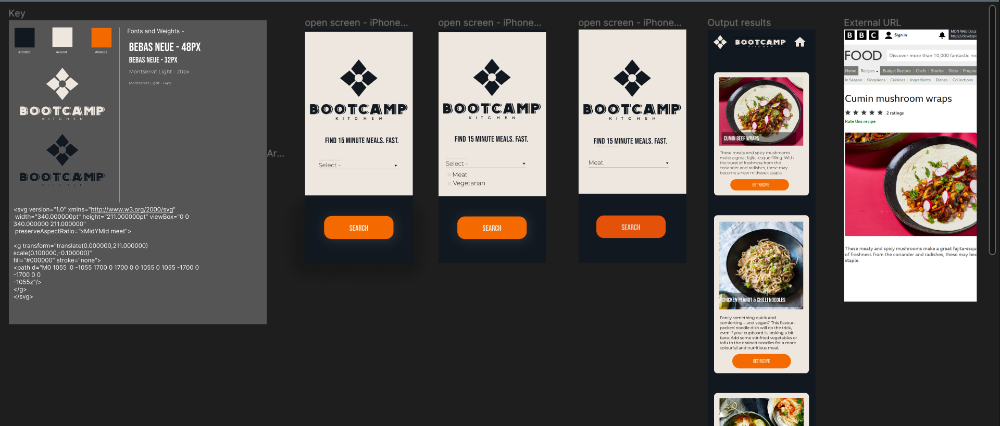
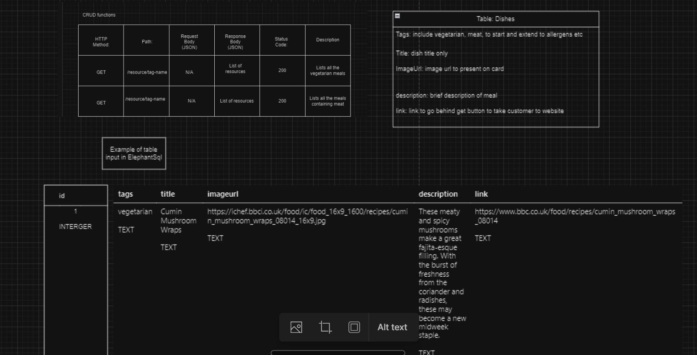
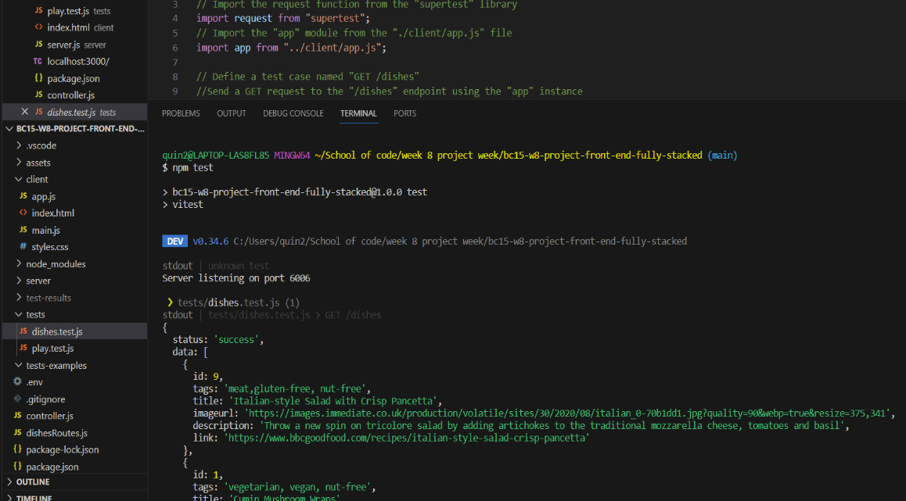
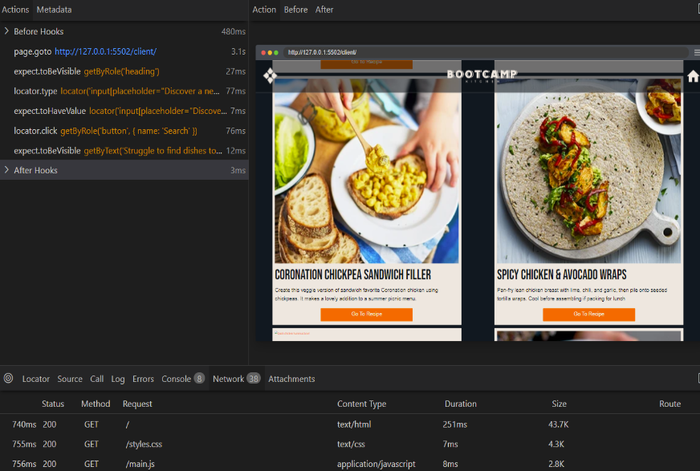
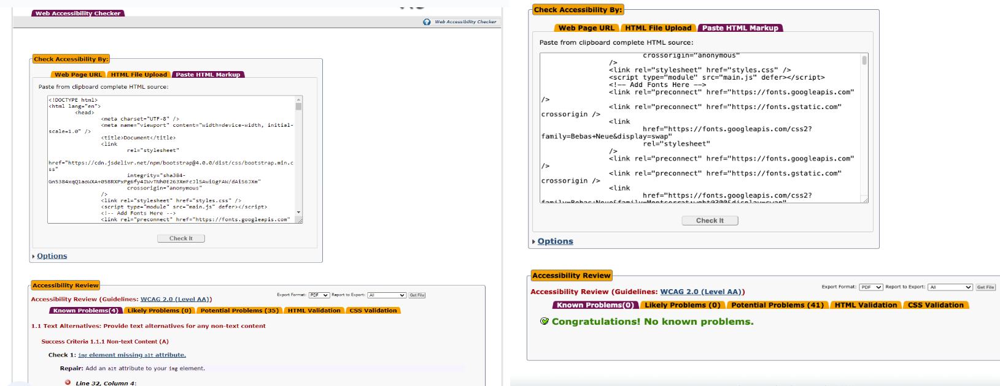

Bootcamp Kitchen
Tech Stack
HTML
Bootstrap
CSS
JavaScript
Node.js
Express
ElephantSQL
Vitest
Playwright
Figma
Git
Overview
I was one of six developers who worked on this project. We were tasked with identifying and addressing common issues faced by bootcampers and developing a solution within a week, our team conducted user research and utilized the Disney ideation method to narrow down our problem statement. The result of our efforts is Bootcamp Kitchen, a website allowing users to discover 15-minute recipes tailored to their preferences, whether it be specific ingredients or dietary requirements.
Day One:
We started by creating our team manifesto, where we discussed and agreed on how we would communicate with each other, make decisions, and resolve conflicts if any were to arise. We then began sharing our experiences and discussing the challenges we face. Eventually, the conversation shifted towards food, emphasizing how the one-hour lunch break quickly passes, especially when we have to prepare our own meals. A team member mentioned frequently resorting to cereal as a quick solution. We reached a consensus that, since the start of this course, we all tend to eat not so great, along with other problems. This led to the theory we wanted to test out with other boot campers: Do they feel the same way? We then developed a hypothesis: "Boot-campers are struggling to maintain nutritional self-care, as a result of feeling restricted by time."
We conducted user research to test our hypothesis by creating a survey, which was distributed among our cohort. After analyzing the responses, we confirmed the accuracy of our hypothesis. Additionally, we conducted interviews with members of our cohort to delve further into the identified problem, and to help us build empathy with our users.
Following on from this, we conducted competitor research, examining existing solutions to the identified problem. We assessed the strengths and weaknesses of these solutions and considered potential improvements. Additionally, we looked at the UI and UX of our competitors to shape our vision for the website. We also delved into the science of healthy eating and its benefits, researching how the food we eat affects our bodies. Finally, we put on our empathy boots and created two user persona's based on our research.

Day Two:
Tuesday came, and we started the day by planning out what we wanted to achieve by the end of the day. One of those goals was the Disney ideation stage. This was where we wrote down lots of different ideas as if there were no limitations in the world. Then comes the realist stage where we focused on bringing the dreams into reality by looking at their feasibility, and then came the critic stage. This is where we refined the ideas down further. After finishing the critique stage, we had a better idea of what was achievable. We then discussed the issues of using an external API and decided to use a database instead, as we could guarantee all the options that we might want. We also considered the types of categories we would want in each database, such as meat/vegan.

As a team, we agreed on our final idea and identified the features we would want to include, such as authentication and search filters for cuisine style, allergies, and protein choice. After that, we decided on our minimum viable product (MVP) and set goals for what we wanted to achieve by the end of the week. Our target was to develop a mobile-friendly app that allows users to search for recipes by clicking on a drop-down menu and choosing either meat or vegan, with a focus on providing bootcampers with a 15-minute meal app. We agreed that our MVP would not include the same features as our final idea, given we only had 2 days to code. We then started our user stories and designed both our low-fi and high-fi prototypes on Figma, including deciding on the fonts and color patterns.

Finally, we designed the database schema with columns for different variables, such as a title, image URL, and a description. We also outlined the necessary CRUD functions which were two GET requests. To finish the day strong, we created a Kanban board listing all tasks.

Day Three:
Coding time. We discussed as a team what we wanted to achieve by the end of the day and we agreed on our tech stack. We decided to split into two groups, one working on the front-end and the other on the back-end. We aggred to group back up after lunch and beofre the end of the day to discuss our progress and any issues we were facing.
I was part of the back-end team, where we started by creating the database in ElephantSQL and seeded it with data. Next up, we created the model to define how our data would be structured. We then brought our application to life by building the routes for our CRUD functions, letting our server know how to handle requests. The controller was like the brains behind the operation, making sure everything ran smoothly and coordinating the different parts of our system. Finally, we connected our server to the database, allowing them to work together seamlessly.
In simpler terms, we took our database, model, routes, controller, and server, and we made them work together like a well-choreographed dance – each part playing its role to make our back-end robust and efficient.

The front-end team started by creating the skeleton of the website, including the navbar. They then proceeded to implement key features such as the search bar and the corresponding search results page. Subsequently, they implemented features such as the search bar and the corresponding search results page. In this phase, the team focused on designing what the search results would display for 15-minute meals, incorporating recipe images, titles, and descriptions.
After regrouping, a collective decision was made to enhance user flexibility by modifying the search bar to align with the final project idea. This adjustment moved away from limiting users to choosing between meat or vegan options, instead allowing them to explore recipes based on a broader range of preferences. The front-end team skillfully executed this enhancement by adjusting the search bar functionality, enabling users to perform searches with terms, such as "Gluten", "Dairy-free", "Chicken", etc.

We ended the day by merging the front-end to the back-end. This did pose a few problems, but we managed to resolve them by the end of the day.
Day Four:
The last day of coding. We agreed to refrain from implementing major changes to our codebase, dedicating our efforts instead to bug fixing and making sure everything was working as intended. Our day commenced with testing, conducted in two teams of three. Post-lunch we regrouped to focus on our presentation, making sure we had everything we needed for the live presentation the next day.
As part of the backend team we started our day with unit-testing using Vitest, and then we moved on to end-end testing using Playwright. The successful outcomes of these tests were captured in the following images:


The front-end team began by enhancing the responsiveness of our mobile website for larger screens. They then conducted accessibility testing, which revealed issues related to providing text alternatives for images. They promptly addressed this issue by adding alt tags to all the images, ensuring a more inclusive user experience.

End Result:
Personal Reflections
I was over the moon with how much we had achieved in such a short space of time. We not only accomplished our MVP but also added more features to our final product! We worked so well together; I firmly believe our daily meetings played a crucial role, as communication is key! One thing I would do differently next time is ensure that we all contribute to both the front-end and back-end. I believe it would have provided us with a more comprehensive learning experience.
Vision for the future: In the first week, I would implement authentication and create/connect user profiles to the database, enabling users to save their favorite recipes. Within a month, I plan to introduce a community area where users can share pictures, meal recipes, and comment on each other's posts.